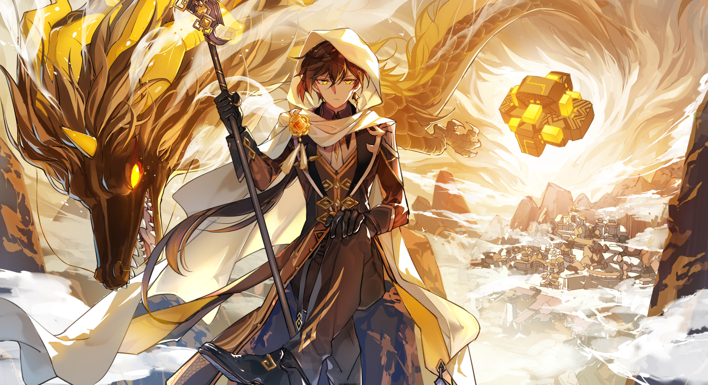

Deskripsi
Tunjukkan kreativitas kamu desainlah stiker Genshin! Sebuah gambar mengungkapkan ribuan kata, jadi buatlah stiker orisinil kamu yang menggambarkan perayaan, memberi semangat, dan mengapresiasi penyanyi dan rekaman favorit kamu. Lima (5) desain yang dipilih Paimon untuk menjadi pemenang akan difitur dalam katalog stiker Genshin, serta diperlihatkan di berbagai media sosial dan blog Hoyoverse.
Ketentuan
- 1. Dilarang mempublikasikan konten yang tidak terkait dengan acara tersebut (termasuk namun tidak terbatas pada tautan iklan dan sarana publisitas lainnya).
- 2. Traveller diperbolehkan mengirimkan lebih dari satu kali untuk acara ini, namun hanya satu hadiah yang dapat dimenangkan untuk setiap Wisatawan. Hadiah tidak dapat ditumpuk dan hanya hadiah tertinggi yang dimenangkan yang akan diberikan.
- 3. Acara ini diadakan di berbagai platform, dan karya pemenang akan dipilih dari semua platform. Hadiah di atas adalah total hadiah untuk semua platform. Tidak ada jumlah hadiah yang disisihkan untuk setiap platform dan wilayah.
- 4. Jika entri yang sama menang di beberapa platform, hadiah akan diberikan sesuai dengan platform pertama kali diposting setelah verifikasi akhir (hanya satu hadiah yang akan diberikan).
- 5. Panitia resmi akan memilih karya pemenang dari seluruh karya yang dikirimkan dan memenuhi aturan acara. Oleh karena itu, kemungkinan tidak semua hadiah akan dibagikan.
- 6. Harap pastikan bahwa karya pemenang tetap bertahan setidaknya 7 hari setelah hasilnya diumumkan agar dapat diverifikasi. Mereka yang menghapus postingan pemenangnya dalam periode verifikasi ini akan dianggap secara sukarela kehilangan hadiahnya.
- 7. Setelah daftar pemenang diumumkan, para pemenang harus menyampaikan informasi hadiahnya dalam waktu yang ditentukan. Kegagalan untuk mengisi informasi yang diperlukan tepat waktu atau mengisi informasi yang salah akan dianggap sebagai penyitaan hadiah, dan hadiah tidak akan diterbitkan kembali.
- 8. Hadiah Primogem akan diberikan dalam waktu 20 hari kerja setelah hasil diumumkan. Perkiraan waktu pengiriman hadiah uang tunai dan merchandise adalah dalam waktu 60 hari kerja setelah pemenang memberikan informasi hadiahnya.
- 9. Anda dapat mengunjungi situs resmi game untuk informasi lebih lanjut tentang Kebijakan Privasi kami. Semua data pribadi akan dikumpulkan dan digunakan sesuai dengan Kebijakan Privasi kami.
Hadiah
- First Prize (1 Winner) 3,000 Primogems + 500 USD
- Second Prize (2 Winner) 2,000 Primogems + 300 USD
- Third Prize (3 Winner) 1,000 Primogems + 100 USD
Pilihan Character

 Cepat Daftar GENSHIN CHALLENGER STICKER CONTEST tekan tombol daftar dibawah
Cepat Daftar GENSHIN CHALLENGER STICKER CONTEST tekan tombol daftar dibawah
Daftar